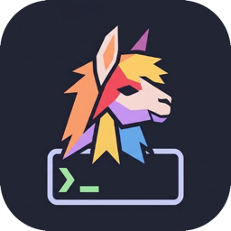

cria-dock-badge
a Herdr mod for macOS
Agents waiting on you?
See it from any app.
The number of agents waiting on you, on Herdr's icon in the Dock.
- Questions and permissionsin every space
- Sub-agents includedwhich Herdr's own count misses
- Always currentwithout touching Herdr
- Nothing in your windowa 0-pixel spot in the layout